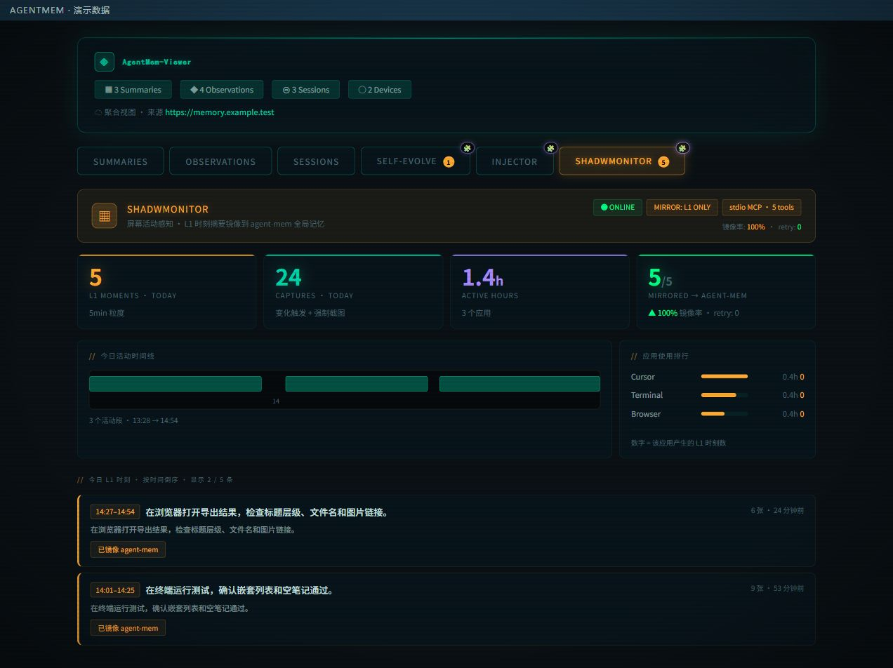

← 返回作品集桌面客户端、聚合服务与插件 · 2026AgentMemAgentMem 是给 AI 编程会话用的项目记忆工具。它记录改动和任务进展，供人和接手的 Agent 检索。一次会话结束后，下个 Agent 需要两种粒度的材料：摘要交代进度，观察记录保留具体改动。两种记录都归到原项目与会话，同步后还保留设备来源。编程会话如何变成项目记忆写入编辑器 Hook文件编辑、工具调用观察与摘要关联项目和会话本机 SQLite保存分层记录检索MCP 查询限定项目索引与前后文命中相关记录按编号取详情返回观察或摘要注入会话钩子开始或提交消息近期项目记忆准备相关上下文当前会话带入已有进展放大查看 ↗跨设备记忆浏览器 · 演示数据记忆浏览器使用演示数据；摘要卡保留项目、编程工具和设备来源。从编辑器事件到可检索记忆本地记录如何跨设备聚合四个插件怎样读写记忆从编辑器事件到可检索记忆事件、观察记录与摘要CodeBuddy 和 Cursor 的 Hook 捕获工具调用与文件编辑，客户端按项目和会话组织记录，写入本机 SQLite。观察记录保留某次定位、改动或测试；会话摘要概括阶段结果。以 Markdown 导出修复为例，标题层级修正与补测各有观察记录，可以从同一份摘要追到。放大查看 ↗从摘要切到 Observations，可以看到定位原因、修复层级和补测试这几条单独的记录。检索为何先返回索引桌面快捷搜索按文本匹配，可按项目限定范围。MCP 查询则先返回命中索引和前后文，调用方需要原始细节时再按编号读取，避免把整段会话一次塞进上下文。主动检索还能合并全文和向量两路排名。放大查看 ↗限定项目后，搜索结果分成摘要和观察记录，可以直接跳到完整浏览器。本地记录如何跨设备聚合每台设备先保有本机记录。连接同一聚合服务后，远端视图按来源汇集观察与会话摘要，后台按账号和设备统计同步情况。项目的 Markdown 导出是一份交接快照，后续新增记录仍走同步链路。放大查看 ↗聚合服务后台用设备数和各账号最近同步情况来检查记录有没有到达。四个插件怎样读写记忆ShadwMonitor：桌面活动进入检索终端测试和浏览器验收发生在编辑器 Hook 之外。ShadwMonitor 在本地通过截图和 OCR 提炼桌面活动，启用桥接后，短时摘要进入记忆检索，截图保存在插件本地。放大查看 ↗终端测试、浏览器验收等活动显示在时间线和 L1 时刻列表中。Self-Evolve：从记录提炼规则Self-Evolve 从项目会话提炼候选 Rules 和 Skills。一次修复是历史事实；由它提议的「导出时回归二级和三级标题」是待审核规则。批准后才进入对应工具的写入流程。放大查看 ↗待审核和已批准的候选规则在同一面板里可以区分。Injector：把规范写入工作区Injector 把目标工作区、编程工具和待部署内容组成一次写入。Skills、Rules、MCP 和 Bundle 先生成目标位置预览，落盘后形成已注入清单。放大查看 ↗同一个工作区选中两种工具和两项内容，底部可进入预览。ShadowFolk：按工作区调度上传上传插件从指定工作区读取观察记录与会话摘要，可按日程或手动触发，记录最近发送的数量。它与跨设备聚合使用各自的调度。放大查看 ↗上传设置可以按工作区维护，并查看最近一次推送的观察记录和摘要数量。
 放大查看 ↗放大查看 ↗
放大查看 ↗放大查看 ↗